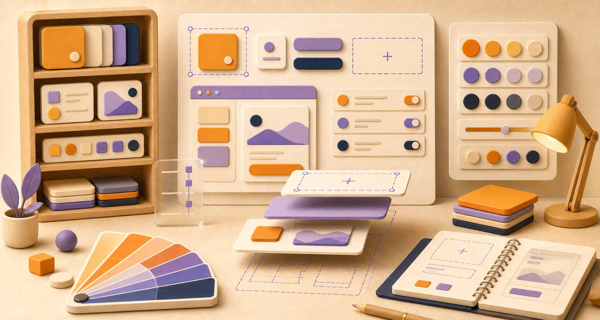

와이어프레임부터 Figma 프로토타입까지
Claude Code로 나만의 웹사이트 만들기
기능사 실기 레이아웃 완성 가이드
반응형 웹사이트를 처음부터 만들어보기
Figma MCP로 AI와 디자인 협업하기
Codex로 UI 컴포넌트 자동 생성하기
JavaScript로 인터랙션 만들기

Figma 처음 시작하는 분을 위한 완전 기초
CSS 애니메이션과 트랜지션 실무 활용
Claude Code 입문: 처음 써보는 AI 코딩